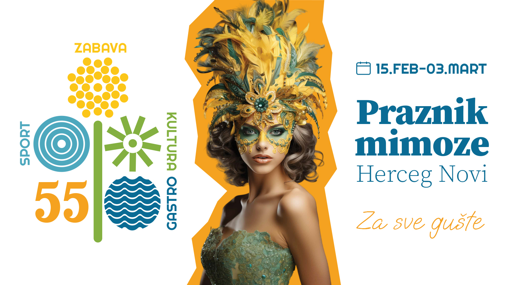
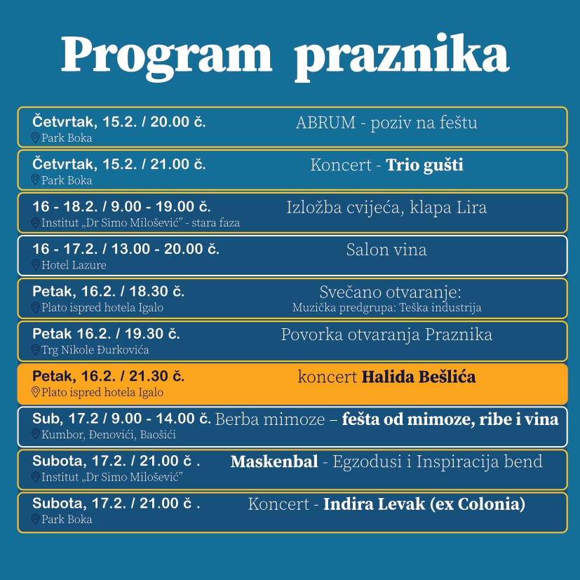
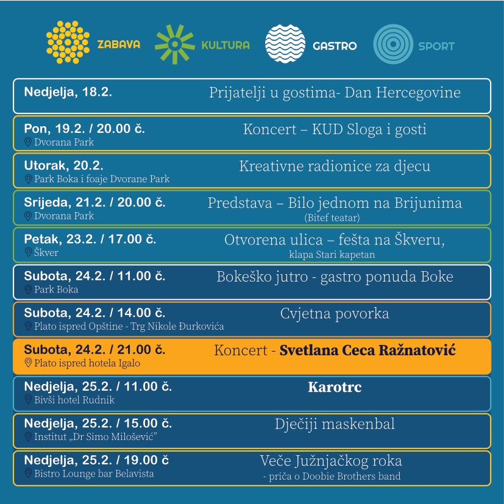
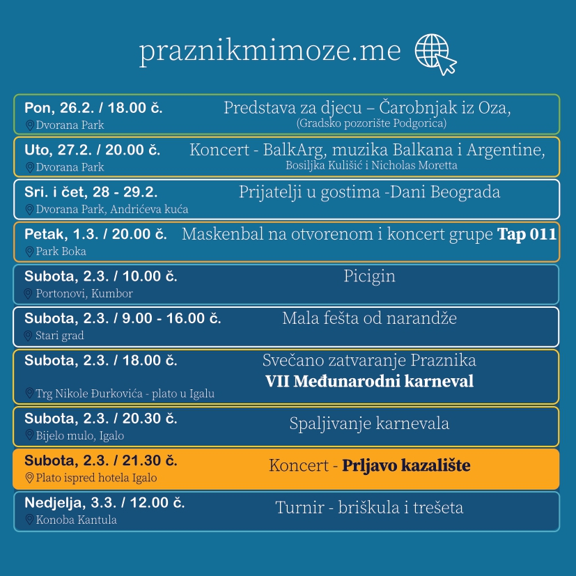
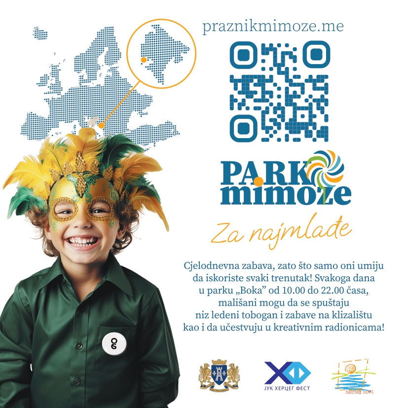

55. PRAZNIK MIMOZE 2024
55. Praznik mimoze biće održan u Herceg Novom od 15. februara do 03. marta 2024. godine.

Vrijeme je za 55. Praznik mimoze – Herceg Novi vas čeka na feštu! 🎭 🥁 🎶
Herceg Novi otvara vrata za 55. Praznik mimoze koji će biti održan od 15. februara do 3. marta. Pod sloganom „Za sve gušte”, ova jedinstvena manifestacija i karnevalska svetkovina u čast cvijeta, zabave i druženja, svečano će biti otvorena u petak, 16. februara povorkom kroz grad i koncertom jedne od najvećih regionalnih zvijezda, Halida Bešlića.
📣 Dan ranije, 15. februara, Abrumaćemo od Igala pa duž cijele rivijere i na tradicionalan način pozvati sve na feštu. Dolazak povorke maškara u Park Boke označiće početak žurke uz koncert benda Trio gušti.
🌟 Svečano otvaranje u petak, 16. februara počeće podizanjem zastave Praznika mimoze na simbolu grada – Tori, a u 19.30 krenuće povorka Gradske muzike i Mjesne muzike Đenović, mažoretki i trombonjera od Trga Nikole Đurkovića do platoa ispred bivšeg hotela „Igalo“ gdje će biti upriličena ceremonija otvaranja i predaja ključeva grada Kapu Mimozinog karnevala. Do tada atmosferu će „ugrijati“ regionalno popularan bend Teška industrija čiji koncert u Igalu počinje u 18:30 časova, dok će koncert Halida Bešlića početi u 21.30 časova.
🌼 Decenijama unazad, najpopularniji program Praznika mimoze je pučka fešta uz more – Berba mimoze, koja okupi na desetine hiljada posjetilaca.
🥁 Program će u subotu, 17. februara, početi defileom novskih mažoretki, Gradske muzike, Mjesne muzike Đenović i trombonjera, od prostorija Mjesne zajednice Kumbor, kroz Đenoviće, do Doma kulture u Baošićima, uz kulturno-umjetnički i zabavni program u svakom mjestu. Tradicionalno, domaćice iz Đenovića i Baošića služiće posjetiocima ribu i vino na više punktova.

🎭 Istog dana, u večernjim časovima, u Institutu „Dr Simo Milošević“ biće organizovan maskenbal koji će nastupom otvoriti novske mažoretke i Gradska muzika. U salu će potom ući maske, a njih i goste zabavljaće lokalni bend Exodusi kao i Inspiracija bend. Za kreativne maske ulaz je besplatan, a za najbolje je obezbijeđen veoma bogat fond robnih i novčanih nagrada.
🎶 Za sve one koji se te večeri odluče za žurku na otvorenom, u Parku Boka očekuje koncert Indire Levak (ex Colonia), uz klizalište, ledeni tobogan i ostale prateće sadržaje.
💐 Praznik mimoze je nemoguće započeti bez tradicionalne Izložbe cvijeća koja će i ove godine trajati tri dana, od petka do nedelje (16-18. februar) u Prvoj fazi Instituta „Dr Simo Milošević“ i okupiti preko 40 izlagače iz zemlje i regiona. U petak i subotu, (16. i 17. februar) u Lazure hotel and marina biće upriličen Salon vina.
🤝 Nedelja, 18. februar, rezervisana je za prvi program posvećen prijateljima u okviru Dana Hercegovne, dok će Dani Beograda biti održani 28. i 29. februara.
💃 Tokom prve sedmice 55. Praznika mimoze, očekuje nas koncert KUD Sloga sa prijateljima u ponedeljak, 19. februara, dok je pozorišna predstava „Bilo jednom na Brionima“ na repertoaru u srijedu, 21. februara.
🎶 Sve to je uvertira za drugi vikend najveće fešte na Jadranu koja u petak, 23. februara donosi program Otvorena ulica – fešta na Škveru uz ribu, vino i klapu Stari kapetan. Subotu, 24. februar otvara „Bokeško jutro“ u Parku Boka i prilika da se prikaže gastro ponuda Boke. Nastavljamo uz najveseliju i najslađu dječiju Cvijetnu povorku od platoa ispred zgrade Opštine HN u 14.00 časova do centralnog gradskog trga.
🎙 Veče (24. februar) će donijeti koncert regionalne zvijezde Svetlane Cece Ražnatović na platou ispred bivšeg hotela Igalo od 21.00 čas.

🏁 Jedinstvena sportsko zabavna manifestacija u Crnoj Gori, koja privuče veliki broj učesnika je Karotrc, trka karića, a na programu je u nedelju, 25. februara od Rudnika do Škvera.
🎭 Tog dana, u popodnevnim satima, biće priređen i dječiji maskenbal u Institutu „Dr Simo Milošević“.
🎬 Najmlađi će uživati u pozorišnoj predstavi Gradskog pozorišta Podgorica „Čarobnjak iz Oza“ u ponedeljak, 26. februara, a dan kasnije koncert će u Dvorani Park održati prof. Bosiljka Kulišić.
🎭 U samoj završnici 55. Praznika mimoze mještane i goste, ali i članove karnevalskih grupa iz gradova regiona i Evrope, očekuje Maskenbal na otvorenom u Parku Boka u petak, 1. marta. Koncert će održati grupa koja je povratkom na scenu donijela nevjerovatnu energiju i zabavu – Tap 011.
🎭 🪇 🎶 Subotu, 2. marta, započinjemo još jednom jedinstvenom i veoma atraktivnom manifestacijom – Turnir u piciginu u Portonovom. Istog dana u centru grada održaće se Fešta od narandže, a popodnevni sati donose karnevalski duh više desetina maskiranih grupa na VII Međunarodnom karnevalu. Povorka kreće sa glavnog gradskog trga u 18.00 časova ka platou u Igalu gdje će se predstaviti koreografijama. Uslijediće suđenje Karnevalu kojeg Novljani simbolično krive za sve nedaće u prethodnoj godini, a potom i spaljivanje na mulu u Igalu. Uz ceremoniju svečanog zatvaranja, na scenu će stupiti grupa koja decenijama traje i podjednako ostaje omiljena kod mlađe i starije publike – Prljavo kazalište. Nedelja donosi turnir u trešeti i briškuli kada će se odmjeriti najbolji timovi u igranju popularnih kartaških igara, opet tradicionalnih za područje Boke.
⛸ 🛝 Park Boka biće i tokom 55. Praznika mimoze mjesto druženja, zabave, dobre muzike. Uz klizalište koje je svakodnevno dostupno od 10.00 do 22.00 časa, od 14. februara biće u funkciji i veliki ledeni tobogan. Za najmlađe posjetioce svake večeri će, od 14. do 23. februara, biti organizovan bogat zabavni program poput izbora najmaštovitijeg šešira, ledeni dan, najbrži spust, „most fanny face”......
▶️ Posjetioce 55. Praznika mimoze očekuje više od 50 muzičkih, gastro, kulturnih, dječijih i sportskih programa „Za sve gušte“ od 15. februara do 3. marta


Rezervišite svoje mesto u apartmanima MONAKO (klikni za detalje) na vrijeme i budite dio neverovatnog praznika mimoze 2020. godine u Herceg Novom.